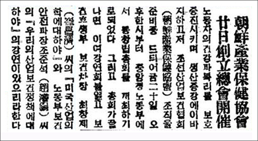
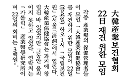
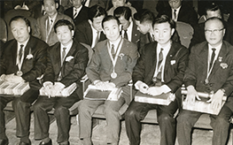
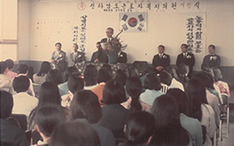
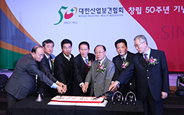
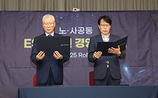

1947’
대한민국 산업보건 역사가 시작되다
1947년 11월 20일, 노동부의 주관으로 ‘조선산업보건협회’가 되었으며 대한민국 정부 수립 직후인 1949년 12월 16일에 ‘대한산업보건협회’로 개칭했다. 협회의 탄생으로 이 땅에 산업보건의 역사가 시작되었다. 1953년 5월 10일 「근로기준법」이 제정되면서 유해물질 취급, 안전위생교육, 건강진단 조항, 안전보건 관리자 배치 등에 대한 최초의 법률이 마련되었다.
1947
-1962

-
- 1947. 11. 20.
-
조선산업보건협회 창립

-
- 1949. 10. 20.
-
대한산업보건협회로 확대 개칭
-
- 1954. 04.
-
최영태 박사 석탄 광부 진폐증 규명
「탄광 직업병에 관한 조사 보고서」 발간
-
- 1956.
-
장성광업소 작업환경조사
-
- 1960.
-
「석탄광부의 노동생산성에 관한
기본조사 보고서」 발간
1960’
협회의 재건으로 산업보건의 싹을 틔우다
전후 복구가 한창이던 1963년 11월에 보건관리자와 보건관리요원 그리고 최영태, 조규상 등의 교수들이 모여 한국전쟁으로 기능을 멈춘 대한산업보건협회를 다시 일으켰다. 협회는 우리나라 최초의 직업성 질환 요양의료기관인 ‘직업병 클리닉’ 의원과 ‘영등포산업보건서비스센터’를 개설하며 불모지와 다름없던 이 땅에 산업보건의 싹을 틔웠다.
1963
-1969
-
- 1963. 11. 22.
-
대한산업보건협회 재건총회

-
- 1964.
-
대한산업보건협회 부속 훈련원 설치
-
- 1965. 11. 25.
-
우리나라 최초 직업병 클리닉 설치
-
- 1966. 03. 27.
-
6개 지역 지부 결성
(경인, 강원, 충남북, 전남북, 경북, 부산경남)
-
- 1967. 09.
-
국제산업보건위원회
(ICOH,
International Commission on
Occupational Health) 가입
1970’
근로자복지의원의 설립으로 전국 산업보건 추진
1970년 11월 13일 전태일 열사의 분신 항거로 노동청 주관하에 대한산업보건협회가 작업환경조사와 보건관리 실태조사를 실시했다. 이를 토대로 1971년 2월 무료 의료기관인 ‘청계상가 근로자복지의원’을 개원했으며, 4월에는 영동포, 인천, 대전, 광주, 대구, 부산 6개 지역에 근로자복지의원을 설립했다. 이를 계기로 전국에서 산업보건 사업이 본격 추진되었다.
1970
-1979
-
- 1971. 02. 01.
-
청계시장 상가 근로자복지의원 설립

-
- 1971. 04. 01.
-
6개 지역 근로자복지의원 설립
(영등포, 인천, 대전, 광주, 대구, 부산)
-
- 1972. 09. 01.
-
노동자 특수건강진단 실시
-
- 1973. 11.
-
마산수출자유지역 집단보건관리 첫 시행
-
- 1979. 10. 22.~28.
-
제9차 아시아산업보건학회(ACOH)
학술대회 및 총회 개최(서울)
1980’
특수건강진단기관, 보건진단기관,
작업환경측정기관 지정
1981년 12월, 「산업안전보건법」이 최초로 제정되어 산업보건의 법적 근거가 명확해지고 정부 정책이 구체화되었다. 협회는 정부로부터 특수건강진단기관으로 지정받아 사업장 노동자의 특수검진을 시작했다. 또한 사업장 보건관계자의 직무교육대행기관, 보건진단기관, 작업환경측정기관으로 지정받으며 국내 최고의 산업보건전문기관으로 발돋움했다.
1980
-1989

-
- 1983. 03.
-
특수건강진단기술협의회 구성
노동부로부터 특수건강진단기관 지정
-
- 1984. 01.
-
월간 「산업보건소식」 발간
-
- 1984. 05. 25.~27.
-
제1회 한·일 산업보건학술집담회(서울)
-
- 1987. 04.
-
일반건강진단기관중앙협의회 결성
일반건강진단기관 지정
-
- 1989. 07. 07.
-
중앙분석실험실 설치 : 산업위생분석 실험
1990’
보건관리위탁 사업의 시작 및
최초의 자체 사옥 마련
보건관리자가 없는 소규모사업장에 대해 보건관리위탁을 실시함으로써 전국 모든 사업장에서 산업보건 사업이 효과적으로 이루어지도록 추진하기 시작했다. 정부는 산업안전선진화 계획을 추진하며 산업보건 정책을 강하게 추진했다. 협회 임직원 수가 증가하고 상설 교육장의 필요성 증가에 따라 1999년 5월에 협회 사옥으로 혜산빌딩을 마련했다. 1963년 재건 이후 36년 만에 마련한 최초의 자체 건물이었다.
1990
-1999
-
- 1990. 07.
-
`사업장 노동자 건강증진운동 세미나' 개최
제주지역 특수건강진단 최초 실시
-
- 1992. 09. 01.~10. 30.
-
제1회 특수건강진단기관 정도관리 실시
-
- 1993. 11. 04.~06.
-
`중소기업을 위한 산업보건관리'
국제학술대회 개최
-
- 1995. 08.
-
외국인 산업연수생 건강진단 실시
-
- 1999. 06. 15.
-
본부 혜산빌딩 매입 이전
(서울특별시 서초구 서초동 1490-32)
2000’
민간 최초 한마음혈액원의 개설과
산업보건학술제 개막
2001년 ‘비전 2005’를 선포하고 효율적인 경영시스템 구축을 위해 노력하는 한편 근골격계 질환 예방에 힘썼다. 혈액관리법 개정에 따라 2002년 부설 한마음혈액원을 개설하여 철저한 정도관리와 정확한 혈액검사로 혈액 안전성을 제고했으며, 수혈자가 안심하고 수혈을 받을 수 있는 혈액안전관리시스템을 운영하기 시작했다. 또한 2008년부터 ‘산업보건학술제’를 매년 개최하여 산업보건인들을 위한 축제의 장을 만들었다.
2000
-2009
-
- 2001. 05. 17.~19.
-
제13회 한·중·일 산업보건학술집담회
(중국 북경)
-
- 2002. 03. 28.~30.
-
전 직원 체련대회 및 CI 선포식
-
- 2002. 05. 22.
-
협회 부설 한마음혈액원 개원
-
- 2004. 03.
-
인간공학연구실 신설
인간공학건설팅 시작
-
- 2008. 11. 20.~21.
-
제1회 산업보건학술제
2010’
노사 상생을 위한 노력,
디지털 시대 변화의 대응
2010년대 중반부터 노사 상생을 위한 노력을 시작해 2016년에는 노사파트너십 경진대회에서 우수상을 수상했으며, 조직문화 개선을 위한 노사협약으로 유연근무제를 도입했다. 2015년 10월 한마음혈액원이 모바일앱 ‘레드스팟’을 출시했고, 본부에서는 2016년에 모바일 앱인 ‘Health Keeper’ 서비스를 시작했다. 2018년 5월에는 협회의 교육사업 확대를 홍보하고 산업보건교육 전문기관의 이미지를 제고하기 위해 교육관리 전산시스템인 “KIHA 에듀센터”를 구축했다.
2010
-2019
-
- 2012. 07. 17.
-
VISION 2016 `고품질 서비스로 신뢰받는
최고의 전문기관' 선포 및 선언문 채택
-
- 2013. 01. 28.
-
청렴이행 선포
-
- 2015. 04. 20.
-
경영혁신위원회 출범
-
- 2016. 03. 08.
-
건강진단 모바일 앱 Health Keeper 구축
-
- 2018. 05. 09.
-
교육기관 브랜드 KIHA 에듀센터 런칭
2020’
Health Keeper KIHA, 새로운 오송시대 개막
2021년 1월 ‘Only One Health Keeper KIHA : new 60년’이라는 슬로건으로 비전 2025를 선포하고 중대재해처벌법 제정에 따른 「중대재해예방실」 신설, R&R 재정립 및 성과평가 체계 구축, 산재예방활동 추진을 위한 안전보건경영실천 노사공동 선언, ‘지속가능발전목표(SDGs)’ 서약 등 다양한 정책과 사업을 전개하며 비전 2025 달성을 위해 노력해 나갔다. 특히, 2023년을 기점으로 기존 60년의 협회 역사를 76년으로 확장했으며, 오송 신사옥을 건립해 새로운 오송시대를 개막했다.
2020
-2023

-
- 2020. 09. 10.
-
대한산업보건협회 SNS채널 개설
-
- 2021. 12. 09.
-
'2021 안전문화대상’ 대통령 표창 수상
-
- 2022. 03. 02.
-
예방 중심 중대재해 컨설팅
전담조직 ‘중대재해예방실’ 신설
-
- 2022. 07. 15.
-
ESG 혁신경영 노사공동 선언

-
- 2023. 05. 17.
-
고용노동부와 '안전보건문화 확산' 업무협약